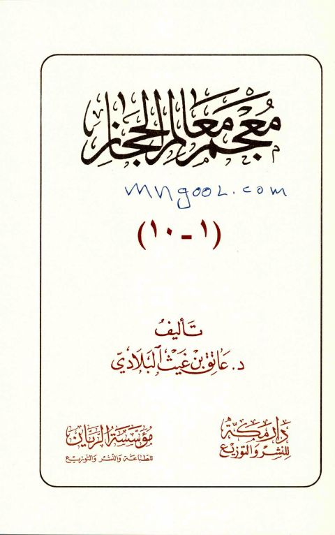

Downloads need an internet connection.
معجم معالم الحجاز- مدمجة
Authors: عاتق بن غيث البلادي
Publishers: مؤسسة الريان دار مكة للنشر والتوزيع
▫️ العنوان: معجم معالم الحجاز- مدمجة ▪️ المؤلف: #عاتق_بن_غيث_البلادي ▫️ الناشر: #دار_مكة • #مؤسسة_الريان ▪️ تاريخ النشر: 1431هـ 2010م ▫️ بلد النشر: مكة المكرمة، #السعودية ▪️ الطبعة: 2 ▫️ عدد الأجزاء: 5 ▪️ الصفحات: 1993 ▫️ نوع الوعاء: #كتاب ▪️ التصنيف الرئيسي: #معاجم_وموسوعات ۪